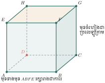
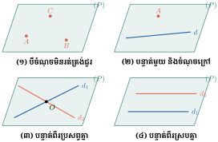
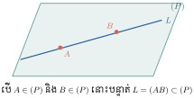
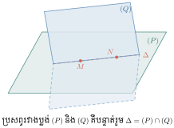
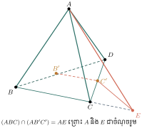
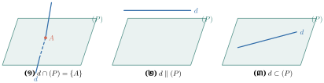
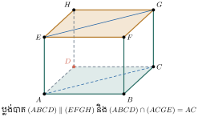

ធរណីមាត្រក្នុងលំហ (Solid Geometry) អេស៊ីប (Egypt) ជាប្រទេសមួយសំបូរទៅដោយសំណង់ពីរ៉ាមីតជាច្រើន ប៉ុន្តែក្នុងបណ្តាពីរ៉ាមីតទាំងនេះ មានតែពីរ៉ាមីតឈ្មោះ គីហ្សា (Giza) ប៉ុណ្ណោះដែលមានវ័យចំណាស់ និងធំជាងគេនៅលើពិភពលោក។ ពីរ៉ាមីតនេះកាលពីមុនមានកម្ពស់ \(\displaystyle 146.6\text{ m}\) ហើយសព្វថ្ងៃនៅសល់ \(\displaystyle 138.8\text{ m}\) សាងសង់ឡើងនៅឆ្នាំ 2570 មុនគ្រិស្តសករាជ។ បេតិកភណ្ឌពីរ៉ាមីត និងសំណង់ស្ថាបត្យកម្មបុរាណ បានផ្តល់នូវគំនិតជាមូលដ្ឋានគ្រឹះយ៉ាងសំខាន់សម្រាប់ការសិក្សាធរណីមាត្រក្នុងលំហ វិទ្យាសាស្ត្រ និងវិស្វកម្មសំណង់។
- គូសរូបក្នុងលំហនៅលើប្លង់ ដោយប្រើក្បួនគំនូសប្លង់កាវ៉ាលីយេ (Cavalier Perspective)
- ប្រាប់បានពីស្វ័យសត្យបន្ទាត់ និងស្វ័យសត្យប្លង់
- កំណត់ប្លង់តាមលក្ខខណ្ឌទាំង ៤ យ៉ាងត្រឹមត្រូវ
- បង្ហាញថាបន្ទាត់មួយនៅក្នុងប្លង់ ឬមិននៅក្នុងប្លង់
- កំណត់បន្ទាត់ប្រសព្វរវាងប្លង់ពីរ
- កំណត់ទីតាំងធៀបរវាងបន្ទាត់និងបន្ទាត់ បន្ទាត់និងប្លង់ និងប្លង់និងប្លង់ក្នុងលំហ ។
ពន្យល់ពិសេស ៖ សួស្តីប្អូនៗសិស្សានុសិស្សថ្នាក់ទី ១១! នៅក្នុងមេរៀននេះ យើងនឹងឈានពីការសិក្សាធរណីមាត្រក្នុងប្លង់ ២ វិមាត្រ (\(\displaystyle 2\text{D}\)) មកកាន់ការសិក្សាធរណីមាត្រក្នុងលំហ ៣ វិមាត្រ (\(\displaystyle 3\text{D}\))។ ប្អូនៗនឹងបានស្វែងយល់អំពីច្បាប់ទម្លាប់នៃការគូររូបលំហ ស្វ័យសត្យគ្រឹះ វិធីកំណត់ប្លង់ ព្រមទាំងទំនាក់ទំនងទីតាំងរវាងបន្ទាត់ និងប្លង់ក្នុងលំហ ដែលជាគ្រឹះមិនអាចខ្វះបានសម្រាប់វិញ្ញាសាប្រឡង និងកម្មវិធី PISA 2029!
1. ការគូសរូបក្នុងលំហនៅលើប្លង់
នៅក្នុងជីវភាពរស់នៅ មានវត្ថុជាច្រើនជារូបធរណីមាត្រក្នុងលំហ (មាន ៣ វិមាត្រ ៖ បណ្តោយ ទទឹង និងកម្ពស់)។ ដើម្បីគូសតំណាងរូបទាំងនេះនៅលើផ្ទៃក្រដាស ឬក្តារខៀនដែលជាផ្ទៃរាប ២ វិមាត្រ គេត្រូវប្រើប្រាស់ វិធីគំនូសប្លង់កាវ៉ាលីយេ (Cavalier Perspective Projection) ៖
- ទ្រនុងមើលឃើញ និងទ្រនុងបាំង ៖ គ្រប់ទ្រនុងដែលភ្នែកមើលឃើញចំពីមុខ ត្រូវគូសដោយ បន្ទាត់ជាប់។ ចំណែកទ្រនុងដែលត្រូវបាំងបាត់ពីភ្នែក ត្រូវគូសដោយ បន្ទាត់ដាច់ៗ។
- ភាពស្របគ្នាក្នុងលំហ ៖ បន្ទាត់ពីរដែលស្របគ្នាក្នុងលំហ ត្រូវតែគូសដោយបន្ទាត់ស្របគ្នានៅលើប្លង់គំនូរ។
- មុខខាងមុខ ៖ មុខណាដែលបែរចំមកមុខអ្នកមើល នៅរក្សាទ្រង់ទ្រាយដើមពិតប្រាកដ (ឧទាហរណ៍ ការេនៅតែជាការេ រង្វង់នៅតែជារង្វង់)។
- មុខចំហៀង និងមុខបាត ៖ មុំកែងអាចប្រែប្រួលទៅជាមុំស្រួច ឬមុំទាល ហើយរាងចតុកោណកែង ឬការេ ត្រូវបានតំណាងដោយប្រលេឡូក្រាម។
- ចំណុចកណ្តាល ៖ ចំណុចកណ្តាលនៃអង្កត់មួយក្នុងលំហ នៅតែជាចំណុចកណ្តាលនៃអង្កត់នោះលើប្លង់គំនូរ។

- ដើម្បីគូសរូបក្នុងលំហ គេត្រូវស្គាល់ច្បាស់អំពីទ្រង់ទ្រាយដើមនៃសូលីត។
- បន្ទាត់ស្របគ្នាក្នុងលំហ តាងដោយបន្ទាត់ស្របគ្នាក្នុងប្លង់។
- អង្កត់ពីរដែលមានប្រវែងស្មើគ្នាក្នុងលំហ មិនចាំបាច់មានប្រវែងស្មើគ្នាក្នុងប្លង់គំនូរទេ (លើកលែងតែស្ថិតក្នុងមុខស្របនឹងប្លង់គំនូរ)។
ប្រតិបត្តិ 1 ៖ ចូរសម្គាល់និងគូសឡើងវិញនូវរូបធរណីមាត្រខាងក្រោម ដោយប្រើបន្ទាត់ដាច់ៗចំពោះជ្រុងដែលបាំង ៖
- ក. ប្រលេពីប៉ែតកែង ៖ ទ្រនុងបាតខាងក្រោយ ២ និងទ្រនុងឈរខាងក្រោយ ១ ត្រូវគូសដាច់ៗ។
- ខ. ពីរ៉ាមីតបាតជាចតុកោណ ៖ ទ្រនុងបាតខាងក្រោយ ២ និងកម្ពស់ខាងក្នុងត្រូវគូសដាច់ៗ។
- គ. ស៊ីឡាំង ៖ ផ្ទៃកោងបាតពាក់កណ្តាលខាងក្រោយត្រូវគូសដាច់ៗជារាងពាក់កណ្តាលអេលីប។
ប្រតិបត្តិ 2 ៖ សង់រូបដែលកើតបានពីការបង្វិលរូបនីមួយៗខាងក្រោមជុំវិញអ័ក្ស \(\displaystyle (XY)\) ត្រូវនឹងមុំ \(\displaystyle 360^\circ\) ៖
- ក. ការបង្វិលត្រីកោណកែងមួយជុំវិញជ្រុងជាប់មុំកែង បង្កើតបានជា កោន (Cone)។
- ខ. ការបង្វិលចតុកោណកែងមួយជុំវិញជ្រុងមួយ បង្កើតបានជា ស៊ីឡាំង (Cylinder)។
- គ. ការបង្វិលកន្លះរង្វង់មួយជុំវិញអង្កត់ផ្ចិតរបស់វា បង្កើតបានជា ស៊្វែ (Sphere)។
2. លក្ខណៈគ្រឹះនៃធរណីមាត្រក្នុងលំហ
2.1. ស្វ័យសត្យបន្ទាត់
ស្វ័យសត្យបន្ទាត់ ៖ តាមពីរចំណុចផ្សេងគ្នា \(\displaystyle A\) និង \(\displaystyle B\) ក្នុងលំហ គេអាចគូសបន្ទាត់បានតែមួយគត់ (តាងដោយបន្ទាត់ \(\displaystyle AB\) ឬបន្ទាត់ \(\displaystyle d\))។
2.2. ស្វ័យសត្យប្លង់
ស្វ័យសត្យប្លង់ ៖ តាមបីចំណុចមិនស្ថិតលើបន្ទាត់តែមួយ (មិនរត់ត្រង់ជួរគ្នា) គេអាចកំណត់បានប្លង់តែមួយគត់ (តាងដោយប្លង់ \(\displaystyle (ABC)\) ឬប្លង់ \(\displaystyle (P)\))។
ឧទាហរណ៍ជាក់ស្តែង ៖ តុជើងបី ឬជើងទម្រម៉ាស៊ីនថតរូប (Tripod) តែងតែមានលំនឹងជាប់ល្អលើគ្រប់ផ្ទៃដីរាបស្មើ ដោយសារតែចុងជើងទាំង ៣ តែងតែកំណត់បានប្លង់តែមួយគត់ជានិច្ច ទោះបីជាដីរដិបរដុបក៏ដោយ។ ផ្ទុយទៅវិញ តុជើង ៤ អាចនឹងកម្រើក (រង្គោះរង្គើ) ប្រសិនបើចុងជើងទាំង ៤ មិនស្ថិតក្នុងប្លង់តែមួយ!
2.3. ការកំណត់ប្លង់
តាមស្វ័យសត្យប្លង់ គេអាចកំណត់ប្លង់តែមួយគត់បានតាម ៤ ករណីដូចខាងក្រោម ៖
- តាមបីចំណុចមិនរត់ត្រង់ជួរគ្នា ៖ ចំណុច \(\displaystyle A, B, C\) មិនរត់ត្រង់ជួរ កំណត់បានប្លង់ \(\displaystyle (ABC)\)។
- តាមបន្ទាត់មួយ និងចំណុចមួយនៅក្រៅបន្ទាត់នោះ ៖ បន្ទាត់ \(\displaystyle d\) និងចំណុច \(\displaystyle A \notin d\) កំណត់បានប្លង់តែមួយគត់ \(\displaystyle (A, d)\)។
- តាមបន្ទាត់ពីរប្រសព្វគ្នា ៖ បន្ទាត់ \(\displaystyle d_1\) និង \(\displaystyle d_2\) ដែល \(\displaystyle d_1 \cap d_2 = \{O\}\) កំណត់បានប្លង់តែមួយគត់។
- តាមបន្ទាត់ពីរស្របគ្នា ៖ បន្ទាត់ \(\displaystyle d_1\) និង \(\displaystyle d_2\) ដែល \(\displaystyle d_1 \parallel d_2\) កំណត់បានប្លង់តែមួយគត់។

លំហាត់គំរូ 1 ៖ គេមាន ៤ ចំណុច \(\displaystyle A, B, C, D\) មិនស្ថិតក្នុងប្លង់តែមួយ (បង្កើតបានជាចតុមុខ Tetrahedron)។ តើតាមបួនចំណុចនេះ គេអាចកំណត់បានប្លង់ចំនួនប៉ុន្មាន?
ដំណោះស្រាយ ៖
១. គិត ៖ ប្លង់មួយត្រូវបានកំណត់ដោយ ៣ ចំណុចមិនរត់ត្រង់ជួរគ្នា។ យើងមាន ៤ ចំណុច ដូច្នេះចំនួនប្លង់គឺជាចំនួនរបៀបជ្រើសរើស ៣ ចំណុចក្នុងចំណោម ៤ ចំណុច។
២. ជ្រើសវិធី ៖ ប្រើបន្សំ \(\displaystyle C(4, 3)\) ឬរាប់បន្សំនៃ ៣ ចំណុចដោយផ្ទាល់។
៣. ធ្វើ ៖
តាមស្វ័យសត្យប្លង់ គេបានប្លង់ចំនួន ៤ គឺ ៖
៤. ពិនិត្យ ៖ ប្លង់ទាំង ៤ នេះជាមុខទាំង ៤ នៃចតុមុខ \(\displaystyle ABCD\) ពិតជាត្រឹមត្រូវ!
លំហាត់គំរូ 2 ៖ គេឱ្យ \(\displaystyle A, B, C, D\) ជា ៤ ចំណុចនៅលើបន្ទាត់ \(\displaystyle a\) មួយ។ បន្ទាត់ \(\displaystyle \Delta\) មួយទៀតមិនស្រប និងមិនកាត់បន្ទាត់ \(\displaystyle a\) ទេ (បន្ទាត់ទ្វេរ)។ តើតាមចំណុចទាំង ៤ ខាងលើ និងបន្ទាត់ \(\displaystyle \Delta\) គេអាចកំណត់បានប្លង់ចំនួនប៉ុន្មាន?
ដំណោះស្រាយ ៖
ដោយបន្ទាត់ \(\displaystyle a\) និង \(\displaystyle \Delta\) មិនកាត់គ្នា និងមិនស្របគ្នា នោះចំណុច \(\displaystyle A, B, C, D\) ទាំងអស់ស្ថិតនៅក្រៅបន្ទាត់ \(\displaystyle \Delta\)។
តាមករណីទី ២ នៃការកំណត់ប្លង់ (ចំណុចមួយ និងបន្ទាត់មួយនៅក្រៅវា) គេអាចកំណត់បានប្លង់តែមួយគត់ ៖
- ប្លង់កំណត់ដោយចំណុច \(\displaystyle A\) ជាមួយនឹងបន្ទាត់ \(\displaystyle \Delta\)
- ប្លង់កំណត់ដោយចំណុច \(\displaystyle B\) ជាមួយនឹងបន្ទាត់ \(\displaystyle \Delta\)
- ប្លង់កំណត់ដោយចំណុច \(\displaystyle C\) ជាមួយនឹងបន្ទាត់ \(\displaystyle \Delta\)
- ប្លង់កំណត់ដោយចំណុច \(\displaystyle D\) ជាមួយនឹងបន្ទាត់ \(\displaystyle \Delta\)
ដោយចំណុចទាំង ៤ ស្ថិតលើបន្ទាត់ \(\displaystyle a\) តែមួយដែលមិនកាត់ \(\displaystyle \Delta\) ប្លង់ទាំង ៤ នេះជាប្លង់ផ្សេងៗគ្នា។
ដូចនេះ គេអាចកំណត់បានប្លង់ចំនួន \(\displaystyle 4\) ផ្សេងគ្នា។
ប្រតិបត្តិ ៖ គេមានបន្ទាត់ស្របគ្នាបី \(\displaystyle d_1 \parallel d_2 \parallel d_3\) ក្នុងប្លង់ \(\displaystyle (P)\) មួយ និងបន្ទាត់ \(\displaystyle d\) មួយទៀតនៅក្រៅប្លង់ \(\displaystyle (P)\) ដែលស្របទៅនឹងបន្ទាត់ទាំងបីខាងលើ។ តើតាមបន្ទាត់ \(\displaystyle d_1, d_2, d_3\) និងបន្ទាត់ \(\displaystyle d\) គេអាចកំណត់បានប្លង់ប៉ុន្មាន?
ចម្លើយ ៖ \(\displaystyle 3\) ប្លង់ គឺប្លង់ \(\displaystyle (d, d_1)\), ប្លង់ \(\displaystyle (d, d_2)\) និងប្លង់ \(\displaystyle (d, d_3)\) ព្រោះបន្ទាត់ពីរស្របគ្នាកំណត់បានប្លង់មួយ។
2.4. បន្ទាត់នៅក្នុងប្លង់
លក្ខណៈបន្ទាត់ក្នុងប្លង់ ៖ បើបន្ទាត់មួយ និងប្លង់មួយមានចំណុចរួមពីរផ្សេងគ្នា នោះគ្រប់ចំណុចទាំងអស់នៃបន្ទាត់ស្ថិតនៅក្នុងប្លង់នោះ (បន្ទាត់ស្ថិតក្នុងប្លង់) ៖

លំហាត់គំរូ ៖ គេមាន ៤ ចំណុច \(\displaystyle A, B, C, D\) ក្នុងប្លង់ \(\displaystyle (P)\) ដែលគ្មាន ៣ ចំណុចណារត់ត្រង់ជួរគ្នាទេ។ តើតាម ៤ ចំណុចនេះ គេអាចគូសបានបន្ទាត់ដែលស្ថិតនៅក្នុងប្លង់ \(\displaystyle (P)\) បានចំនួនប៉ុន្មាន?
ដំណោះស្រាយ ៖
តាមពីរចំណុចផ្សេងគ្នា គេគូសបានបន្ទាត់មួយគត់។ តាមលក្ខណៈបន្ទាត់ក្នុងប្លង់ បើពីរចំណុចស្ថិតក្នុង \(\displaystyle (P)\) នោះបន្ទាត់កាត់តាមវាទាំងមូលក៏ស្ថិតក្នុង \(\displaystyle (P)\) ដែរ។
ចំនួនបន្ទាត់គូសចេញពី ៤ ចំណុចគឺ ៖
បន្ទាត់ទាំង ៦ នោះគឺ ៖ \(\displaystyle AB, AC, AD, BC, BD, CD\)។
ប្រតិបត្តិ ៖ គេមាន ៥ ចំណុច \(\displaystyle A, B, C, D, E\) ក្នុងប្លង់ \(\displaystyle (P)\) ដែលគ្មាន ៣ ចំណុចណារត់ត្រង់ជួរគ្នាទេ។ តើអាចគូសបានបន្ទាត់ក្នុងប្លង់ \(\displaystyle (P)\) ចំនួនប៉ុន្មាន?
ចម្លើយ ៖ \(\displaystyle C(5, 2) = \frac{5 \times 4}{2} = 10\) បន្ទាត់។
2.5. ប្រសព្វរវាងប្លង់និងប្លង់
ទ្រឹស្តីបទប្រសព្វនៃប្លង់ ៖ បើប្លង់ពីរផ្សេងគ្នាមានចំណុចរួមមួយ នោះប្រសព្វរបស់វាគឺជាបន្ទាត់ត្រង់តែមួយគត់ដែលកាត់តាមចំណុចរួមនោះ ៖

លំហាត់គំរូ ៖ គេមានចតុមុខ \(\displaystyle ABCD\)។ ចំណុច \(\displaystyle B' \in BD\) និង \(\displaystyle C' \in DC\) ដែលបន្ទាត់ \(\displaystyle B'C'\) មិនស្របនឹង \(\displaystyle BC\) ទេ។ ចូរកំណត់បន្ទាត់ប្រសព្វរវាងប្លង់ \(\displaystyle (ABC)\) និងប្លង់ \(\displaystyle (AB'C')\)។
ដំណោះស្រាយ ៖
១. រកចំណុចរួមទីមួយ ៖ ចំណុច \(\displaystyle A\) ជារបស់ប្លង់ទាំងពីរស្រាប់ ៖
២. រកចំណុចរួមទីពីរ ៖ ក្នុងប្លង់បាត \(\displaystyle (BCD)\) បន្ទាត់ \(\displaystyle B'C'\) និង \(\displaystyle BC\) មិនស្របគ្នា ដូច្នេះវាប្រសព្វគ្នាត្រង់ចំណុច \(\displaystyle E\) មួយ ៖
ដោយ \(\displaystyle E \in BC \subset (ABC) \implies E \in (ABC)\)
និង \(\displaystyle E \in B'C' \subset (AB'C') \implies E \in (AB'C')\)
នាំឱ្យ \(\displaystyle E\) ជាចំណុចរួមទីពីរនៃប្លង់ទាំងពីរ។
៣. សន្និដ្ឋាន ៖ ប្រសព្វរវាងប្លង់ \(\displaystyle (ABC)\) និង \(\displaystyle (AB'C')\) គឺបន្ទាត់ត្រង់ \(\displaystyle AE\) ៖

3. ទីតាំងរវាងបន្ទាត់និងប្លង់ក្នុងលំហ
3.1. ទីតាំងរវាងបន្ទាត់ពីរក្នុងលំហ
ក្នុងលំហ បន្ទាត់ពីរ \(\displaystyle d_1\) និង \(\displaystyle d_2\) អាចស្ថិតក្នុងស្ថានភាពដូចខាងក្រោម ៖
បន្ទាត់ទាំងពីរស្ថិតក្នុងប្លង់តែមួយ (Coplanar lines) ៖
- ប្រសព្វគ្នា ៖ មានចំណុចរួមមួយគត់ \(\displaystyle d_1 \cap d_2 = \{I\}\)។
- ស្របគ្នា ៖ ស្ថិតក្នុងប្លង់តែមួយ និងគ្មានចំណុចរួម \(\displaystyle d_1 \parallel d_2\)។
- ត្រួតស៊ីគ្នា ៖ មានចំណុចរួមច្រើនរាប់មិនអស់ \(\displaystyle d_1 \equiv d_2\)។
- បន្ទាត់ទាំងពីរមិនស្ថិតក្នុងប្លង់តែមួយ (Skew lines / បន្ទាត់ទ្វេរ) ៖ បន្ទាត់ទាំងពីរគ្មានចំណុចរួមផង និងមិនស្របគ្នាផង (\(\displaystyle d_1 \cap d_2 = \emptyset\) និង \(\displaystyle d_1 \nparallel d_2\))។
មុំរវាងបន្ទាត់ពីរក្នុងលំហ ៖ មុំរវាងបន្ទាត់ពីរ \(\displaystyle d\) និង \(\displaystyle d'\) ក្នុងលំហ គឺជាមុំរវាងបន្ទាត់ពីរ \(\displaystyle d_1\) និង \(\displaystyle d'_1\) ដែលកាត់តាមចំណុច \(\displaystyle O\) មួយ ហើយស្របគ្នារៀងៗខ្លួនទៅនឹង \(\displaystyle d\) និង \(\displaystyle d'\) (\(\displaystyle 0^\circ \le \theta \le 90^\circ\))។
លំហាត់គំរូ ៖ គេមានគូប \(\displaystyle ABCD.EFGH\) មួយ។ ចូរកំណត់មុំដែលបង្កើតឡើងដោយគូនៃបន្ទាត់ខាងក្រោម ៖
- ក. បន្ទាត់ \(\displaystyle AB\) និង \(\displaystyle CG\) ៖
ដោយ \(\displaystyle CG \parallel BF\) នោះមុំរវាង \(\displaystyle AB\) និង \(\displaystyle CG\) ស្មើនឹងមុំរវាង \(\displaystyle AB\) និង \(\displaystyle BF\)។ ដោយមុខ \(\displaystyle ABFE\) ជាការេ គេបាន \(\displaystyle \widehat{ABF} = 90^\circ\)។ ដូចនេះ មុំរវាង \(\displaystyle AB\) និង \(\displaystyle CG\) គឺ \(\displaystyle 90^\circ\) (បន្ទាត់ទាំងពីរកែងគ្នា)។ - ខ. បន្ទាត់ \(\displaystyle AB\) និង \(\displaystyle EH\) ៖
ដោយ \(\displaystyle EH \parallel AD\) នោះមុំរវាង \(\displaystyle AB\) និង \(\displaystyle EH\) ស្មើនឹងមុំរវាង \(\displaystyle AB\) និង \(\displaystyle AD\)។ ដោយមុខ \(\displaystyle ABCD\) ជាការេ គេបាន \(\displaystyle \widehat{BAD} = 90^\circ\)។ ដូចនេះ មុំរវាង \(\displaystyle AB\) និង \(\displaystyle EH\) គឺ \(\displaystyle 90^\circ\)។ - គ. បន្ទាត់ \(\displaystyle AF\) និង \(\displaystyle CH\) ៖
ដោយ \(\displaystyle CH \parallel AF'\) មិនមែនទេ គឺ \(\displaystyle CH \parallel DG\)។ ម្យ៉ាងទៀត ក្នុងត្រីកោណ \(\displaystyle AFH\) ជ្រុង \(\displaystyle AF, FH, AH\) សុទ្ធតែជាអង្កត់ទ្រូងនៃការេនៃមុខគូបដែលមានប្រវែងស្មើគ្នា \(\displaystyle a\sqrt{2}\) នាំឱ្យ \(\displaystyle \Delta AFH\) ជាត្រីកោណសម័ង្ស ដែលមានមុំ \(\displaystyle 60^\circ\)។ ដូច្នេះ មុំរវាង \(\displaystyle AF\) និង \(\displaystyle CH\) (ដោយ \(\displaystyle CH \parallel BG\) នាំឱ្យមុំស្មើនឹង \(\displaystyle \widehat{FBG} = 60^\circ\)) គឺស្មើនឹង \(\displaystyle 60^\circ\)។
3.2. ទីតាំងរវាងបន្ទាត់ និងប្លង់
ក្នុងលំហ បន្ទាត់ \(\displaystyle d\) និងប្លង់ \(\displaystyle (P)\) មួយអាចមានទីតាំងធៀបគ្នា ៣ ករណី ៖
- បន្ទាត់កាត់ប្លង់ ៖ បន្ទាត់ \(\displaystyle d\) និងប្លង់ \(\displaystyle (P)\) មានចំណុចរួមមួយគត់ ៖ \(\displaystyle d \cap (P) = \{A\}\)។
- បន្ទាត់ស្របនឹងប្លង់ ៖ បន្ទាត់ \(\displaystyle d\) និងប្លង់ \(\displaystyle (P)\) គ្មានចំណុចរួមទេ ៖ \(\displaystyle d \parallel (P) \iff d \cap (P) = \emptyset\)។
- បន្ទាត់ស្ថិតក្នុងប្លង់ ៖ គ្រប់ចំណុចនៃបន្ទាត់ \(\displaystyle d\) ជារបស់ប្លង់ \(\displaystyle (P)\) ៖ \(\displaystyle d \subset (P)\)។

3.3. ទីតាំងរវាងប្លង់ពីរ
ក្នុងលំហ ប្លង់ពីរ \(\displaystyle (P)\) និង \(\displaystyle (Q)\) អាចមានទីតាំងធៀបគ្នា ៣ ករណី ៖
- ប្លង់ស្របគ្នា ៖ ប្លង់ពីរគ្មានចំណុចរួមទេ ៖ \(\displaystyle (P) \cap (Q) = \emptyset \iff (P) \parallel (Q)\)។
- ប្លង់ប្រសព្វគ្នា ៖ ប្លង់ពីរមានចំណុចរួម ហើយប្រសព្វគ្នាតាមបន្ទាត់ត្រង់មួយ ៖ \(\displaystyle (P) \cap (Q) = \Delta\)។
- ប្លង់ត្រួតស៊ីគ្នា ៖ គ្រប់ចំណុចនៃ \(\displaystyle (P)\) ជារបស់ \(\displaystyle (Q)\) ៖ \(\displaystyle (P) \equiv (Q)\)។

លំហាត់គំរូ ៖ គេមានប្រលេពីប៉ែតកែង \(\displaystyle ABCD.EFGH\) មួយ។
- ក. កំណត់ប្លង់ដែលស្របទៅនឹងប្លង់បាត \(\displaystyle (ABCD)\) ៖
ប្លង់ពិដាន \(\displaystyle (EFGH)\) ស្របនឹងប្លង់បាត \(\displaystyle (ABCD)\) ព្រោះវាគ្មានចំណុចរួម ៖ \(\displaystyle (ABCD) \parallel (EFGH)\)។ - ខ.
កំណត់បន្ទាត់ប្រសព្វរវាងប្លង់ \(\displaystyle (ABCD)\) និងប្លង់អង្កត់ទ្រូង \(\displaystyle (ACGE)\) ៖
ដោយ \(\displaystyle A\) និង \(\displaystyle C\) ជាចំណុចរួមនៃប្លង់ទាំងពីរ គេបានប្រសព្វគឺបន្ទាត់អង្កត់ទ្រូងបាត \(\displaystyle AC\) ៖\[(ABCD) \cap (ACGE) = AC\]
សង្ខេបមេរៀន
ចំណុចចងចាំសំខាន់ៗ ៖
- ក្បួនគំនូសប្លង់កាវ៉ាលីយេ ៖ គូសបន្ទាត់ជាប់ចំពោះទ្រនុងមើលឃើញ និងបន្ទាត់ដាច់ៗចំពោះទ្រនុងបាំង។ ភាពស្របគ្នាត្រូវបានរក្សា។
- ស្វ័យសត្យបន្ទាត់ ៖ តាម ២ ចំណុចផ្សេងគ្នា កំណត់បានបន្ទាត់មួយគត់។
- ស្វ័យសត្យប្លង់ ៖ តាម ៣ ចំណុចមិនរត់ត្រង់ជួរ កំណត់បានប្លង់មួយគត់។
- វិធីទាំង ៤ ក្នុងការកំណត់ប្លង់ ៖ (១) បីចំណុចមិនរត់ត្រង់ជួរ (២) បន្ទាត់មួយ និងចំណុចក្រៅវា (៣) បន្ទាត់ពីរប្រសព្វគ្នា (៤) បន្ទាត់ពីរស្របគ្នា។
- បន្ទាត់ក្នុងប្លង់ ៖ បើ \(\displaystyle A, B \in (P)\) នោះបន្ទាត់ \(\displaystyle AB \subset (P)\)។
- ប្រសព្វនៃប្លង់ពីរ ៖ បើប្លង់ពីរមានចំណុចរួម នោះប្រសព្វរបស់វាជាបន្ទាត់ត្រង់មួយគត់។
- ទីតាំងបន្ទាត់ពីរក្នុងលំហ ៖ កាត់គ្នា ស្របគ្នា ត្រួតស៊ីគ្នា (ស្ថិតក្នុងប្លង់តែមួយ) ឬបន្ទាត់ទ្វេរ (មិនស្ថិតក្នុងប្លង់តែមួយ)។
- ទីតាំងបន្ទាត់និងប្លង់ ៖ កាត់ប្លង់ (\(\displaystyle d \cap P = \{A\}\)), ស្របនឹងប្លង់ (\(\displaystyle d \parallel P\)), ស្ថិតក្នុងប្លង់ (\(\displaystyle d \subset P\))។
- ទីតាំងប្លង់ពីរ ៖ ស្របគ្នា (\(\displaystyle P \parallel Q\)), ប្រសព្វគ្នា (\(\displaystyle P \cap Q = \Delta\)), ត្រួតស៊ីគ្នា (\(\displaystyle P \equiv Q\))។
លំហាត់អនុវត្ត
\(\displaystyle ABCD.EFGH\) ជាប្រលេពីប៉ែតកែង ហើយប្លង់ \(\displaystyle (MNPQ)\) ស្របនឹងមុខ \(\displaystyle (ABCD)\)។ បំពេញចម្លើយក្នុងចន្លោះ ៖
- ក. ប្លង់ \(\displaystyle (MPQ)\) ប្រសព្វនឹងប្លង់ \(\displaystyle (ABG)\) បានបន្ទាត់រួមមួយគឺ …… (ចម្លើយ ៖ បន្ទាត់កាត់តាមចំណុចរួមនៃប្លង់ទាំងពីរ)។
- ខ. បន្ទាត់ \(\displaystyle QM\) និង \(\displaystyle BC\) ស្របគ្នា កាលណា \(\displaystyle M\) និង \(\displaystyle Q\) ជាចំណុចកណ្តាលនៃជ្រុង \(\displaystyle AB\) និង \(\displaystyle CD\) រៀងគ្នា។
- គ. បន្ទាត់ \(\displaystyle PN\) និង \(\displaystyle QM\) ស្របគ្នា កាលណា \(\displaystyle M, N, P, Q\) ជាចំណុចកណ្តាលនៃទ្រនុងឈររៀងគ្នា។
សង់រូបនីមួយៗឡើងវិញ រួចកំណត់អង្កត់ដាច់ៗចំពោះទ្រនុងដែលបាំង ៖
- ក. រូបគូប ៖ គូសទ្រនុងបាតក្រោយ ២ និងទ្រនុងឈរក្រោយ ១ ដោយបន្ទាត់ដាច់ៗ។
- ខ. ពីរ៉ាមីត ៖ គូសទ្រនុងបាតក្រោយ ២ ដោយបន្ទាត់ដាច់ៗ។
សង់រូបធរណីមាត្រក្នុងលំហ ៖
- ក. ស៊្វែមួយ ៖ គូសរង្វង់មូល និងគូសអេលីបកាត់កណ្តាល (ផ្នែកខាងមុខជាប់ ផ្នែកខាងក្រោយដាច់ៗ)។
- ខ. ព្រីសត្រង់ដែលមានមុខខាងចំនួន ៧ ៖ បាតជាពហុកោណ ៧ ជ្រុង (Heptagon)។
- គ. ស៊ីឡាំងចារឹកក្នុងស៊្វែ ដែលអង្កត់ផ្ចិតបាតស៊ីឡាំងស្មើនឹងកម្ពស់របស់វា។
គេឱ្យចតុមុខ \(\displaystyle OABC\) មួយ ដែល \(\displaystyle M\) ជាចំណុចកណ្តាលនៃជ្រុង \(\displaystyle OC\) ហើយ \(\displaystyle N, P\) ជាទីប្រជុំទម្ងន់នៃត្រីកោណ \(\displaystyle \Delta OAC\) និង \(\displaystyle \Delta OBC\) រៀងគ្នា។
- ក. បង្ហាញថាបន្ទាត់ \(\displaystyle BM\) និង \(\displaystyle AP\) ប្រសព្វគ្នាត្រង់ចំណុចមួយ។
- ខ. រកលក្ខខណ្ឌនៃចំណុច \(\displaystyle S\) ក្នុងត្រីកោណ \(\displaystyle \Delta ABC\) ដើម្បីឱ្យបន្ទាត់ \(\displaystyle OS\) ប្រសព្វជាមួយនឹង \(\displaystyle NP\)។
- គេមានចំណុច \(\displaystyle B, C\) ស្ថិតក្នុងប្លង់ \(\displaystyle (P)\) មួយ និងចំណុច \(\displaystyle A\) មិនស្ថិតក្នុងប្លង់ \(\displaystyle (P)\) ទេ។ ដៅចំណុច \(\displaystyle M\) មួយជារបស់ប្លង់ \(\displaystyle (ABC)\) រួចបន្លាយបន្ទាត់ \(\displaystyle AM\) កាត់ប្លង់ \(\displaystyle (P)\) ត្រង់ \(\displaystyle N\)។ បង្ហាញថាបីចំណុច \(\displaystyle B, C, N\) ស្ថិតនៅលើបន្ទាត់ត្រង់តែមួយ ៖
ដំណោះស្រាយ ៖
ចំណុច \(\displaystyle N \in AM \subset (ABC) \implies N \in (ABC)\)។
ម្យ៉ាងទៀត តាមសម្មតិកម្ម \(\displaystyle N \in (P)\)។
ដូច្នេះ \(\displaystyle N\) ជាចំណុចរួមនៃប្លង់ \(\displaystyle (ABC)\) និងប្លង់ \(\displaystyle (P)\)។
ដោយ \(\displaystyle B \in (P)\) និង \(\displaystyle C \in (P)\) ព្រមទាំង \(\displaystyle B, C \in (ABC)\) នាំឱ្យបន្ទាត់ \(\displaystyle BC\) ជាបន្ទាត់ប្រសព្វតែមួយគត់នៃប្លង់ទាំងពីរ ៖ \(\displaystyle (ABC) \cap (P) = BC\)។
ដោយ \(\displaystyle N\) ជាចំណុចរួមនៃប្លង់ទាំងពីរ នោះ \(\displaystyle N\) ត្រូវតែស្ថិតនៅលើបន្ទាត់ប្រសព្វ \(\displaystyle BC\)។
ដូចនេះ បីចំណុច \(\displaystyle B, C, N\) ពិតជាស្ថិតនៅលើបន្ទាត់ត្រង់តែមួយ។ - ក្នុងចតុមុខ \(\displaystyle ABCD\) មួយ គេយក \(\displaystyle I\) ជាចំណុចកណ្តាលនៃ \(\displaystyle AB\), \(\displaystyle J\) ជាចំណុចកណ្តាលនៃ \(\displaystyle CD\)។ បង្ហាញថាអង្កត់ \(\displaystyle IJ\) កាត់តាមចំណុចកណ្តាលនៃអង្កត់តភ្ជាប់ចំណុចកណ្តាលនៃជ្រុងឈមពីរទៀត (\(\displaystyle AC\) និង \(\displaystyle BD\), ឬ \(\displaystyle AD\) និង \(\displaystyle BC\))។
ខ្លឹមសារ៖ សៀវភៅពុម្ពគណិតវិទ្យាថ្នាក់ទី១១ របស់ក្រសួងអប់រំ យុវជន និងកីឡា · វាយអត្ថបទ គូររូបភាពឡើងវិញ និងរៀបចំលើអនឡាញដោយលោកគ្រូ សាន សុខលី សម្រាប់ការសិក្សាដោយឥតគិតថ្លៃ និងមិនរកប្រាក់ចំណេញ។ មិនមែនជាការបោះពុម្ពផ្លូវការរបស់ក្រសួងទេ។